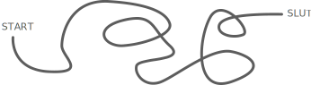

Tema 1 - Intro project

Opgave beskrivelse
I skal i fællesskab udfærdige en video om jeres fælles passion, som I skal præsentere i slutningen af ugen. Med udgangspunkt i jeres fælles passion skal I vælge en serie/titelsekvens.
Krav
- Alle teamets medlemmer skal præsenteres med navn og billede.
- Med udgangspunkt i jeres fælles passion skal I vælge en serie/titelsekvens.
- Videoen skal være ca. 1-2 minutter.
- Giv den gerne gas med kostumer og sjove idéer.
- Musikken skal være rettighedsfri.
- I skal kreditere musikeren/komponisten til sidst i filmen.
- I må ikke bruge klip i jeres video, som I ikke selv har rettigheder til. Det skal fremgå tydeligt, hvilke klip I ikke selv har produceret, hvis I bruger stock images eller andet. Dertil skal I kreditere ophavspersonen til materialet.
Process
Vi startede ud med at lave idegennerering, og kom hurtig frem til at vi ville lade os inspirere af "how I met your mother" serie introen, som har en anderledes tilgang til introvideoer dar den hovedsagelig består at billeder.
Derfor blev vi eninge om at vi tage billedere af diverse medlemmer i gruppen der udførete en form for sport eller aktiv aktivitet.
Der blev udeligeret roller hvortil min rolle først og fremmest var at deltage i fotoshooten, henholdsvist som fotograf og model. Jeg påtog mig dog en ekstra opgave, nemlig at photoshoppe et manglende gruppemedlem ind på fælles billedet.
Dette udførte jeg i photoshop, ved at opdele fællesbilledet samt det individuelle billede i to dele, en baggrund og forgrund (person/-er). Dernæst overførte jeg den manglende person i et nyt layer, som udgjorde mellemgrunden.
Denne ekstra opgave lærte mig funktionen af layers og selector toolet, førstenævnt havde jeg dog erfaring med fra ClipStudio.
En af mine udforsdringer lå i belysningen, som gjorde at jeg måtte redigere det manglende medlems hudfarve til en anden nyance, hvor til jeg også forsøgte at ændre skyggerne.
Da jeg ikke havde tidligere erfaring med photoshop foretog jeg denne ændring med mit tegne program "ClipStudio" men resultatet blev knap så godt som det var ønsket.
Trods udfrodringer med at samle alle, lykkedes det næsten og lappeløsningen fungerede i den ønskede hensigt.
